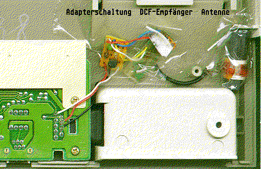

Previous
Next
TOC
Ein DCF-77 Decoder in der Tastatur
Wer den Kabelwust hinter dem Rechner satt hat, hat auch die möglich-
keit den externen DCF-77 Decoder (aus Platzgründen nur die die kein
LC-Display besitzen) innerhalb der Tastatur unterzubringen sofern er
kein Spieler ist. Es müssen lediglich drei Adern des Anschlußkabels
angelötet werden (das wären dann an der Joystickbuchse 1 die Pins 1
(Joystick Hoch), 7 (+5V) und 8 (GND/Masse)) und den DCF-Decoder sel-
ber befestigt man am besten mit Klebeband.
Wie das geht sieht man am eingebauten DCF-77 Decoder in meiner
MegaST-Tastatur (achja, es ist ein älterer Decoder der in meiner
Tastatur eingebaut ist).

An Software benutze ich DCF_TIME von Ralf Zimmermann welches den
Freeware Status besitzt. DCF_TIME bietet nun die Möglichkeit, die
vom Empfänger gelieferten Signale zuverlässig und unauffällig zu
dekodieren. Die Dekodierung läuft im Hintergrund und sorgt regel-
mässig für die aktuelle Uhrzeit. Als weiteres Feature kann man
zwischen der Ortszeit in Deutschland (MEZ, MESZ) und der Weltzeit
UTC wählen. Die Sommerzeit wird automatisch beachtet.
DCF_TIME läuft auf allen ST, STe, Mega-ST, Mega-STe, TT und Falcon-
Rechnern von Atari und unterstützt mehrere DCF Empfängermodule sowie
die folgenden Schnittstellen:
Joystick-Port, Ring-Indicator von MODEM1, Ring-Indicator von MODEM2
Lediglich bei dem Anschluß an den Joystickport kann der Empfänger in
die Tastatur eingebaut werden! In den anderen Computern mit einer ab-
gesetzten Tastatur kann man den DCF Empfänger allerdings im Computer-
gehäuse unterbringen und an eine nichtbenutze Serielle Schnittstelle
(Modem 1 oder Modem 2) anschließen.
Und nebenbei bemerkt: Der Sender DCF77 (auf 77,5 Kilohertz) steht in
Mainflingen (Frankfurt am Main ist um's Eck rum). Angesteuert wird
der Sender von der Atomuhr der PTB in Braunschweig und das Signal
kann in einem Radius von rund 1500 Kilometern rund um Mainflingen
empfangen werden.
Kapitel Ein DCF-77 Decoder in der Tastatur, Seite 1